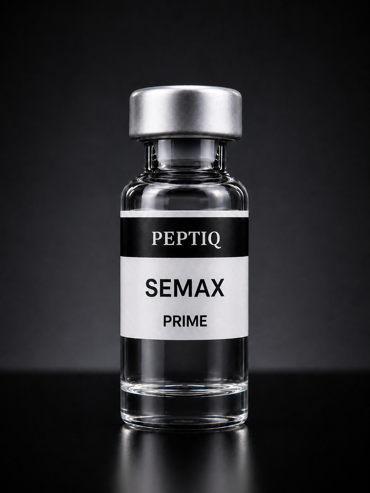

Product Specification Sheet · Verificación en proceso

Este lote está siendo enviado a análisis HPLC independiente con laboratorio acreditado en México (Eurofins Scientific · ISO/IEC 17025). COA verificable se publicará en peptiqresearch.org al recibir resultados. Los parámetros mostrados a continuación corresponden a las especificaciones del fabricante origen.
| Parámetro | Método | Especificación |
|---|---|---|
| Identificación | HPLC / MS | Semax (ACTH 4-10) |
| Apariencia | Visual | Polvo blanco a off-white |
| Contenido | HPLC | ±5% del etiquetado |
| Pureza declarada | HPLC (C18, 220nm) | ≥99.5% |
| Endotoxinas | LAL Gel Clot | <5 EU/mg |
| Agua (Karl Fischer) | KF | ≤8.0% |
"If the product quality doesn't meet standards, I'll refund you and cover the testing costs." — Fabricante origen, política de respaldo en testing independiente. PEPTIQ Research transfiere íntegramente esta garantía al usuario final.